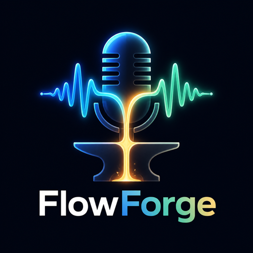

1) Prompt & Lyrics
2–3 Schlagwörter eingeben. Die App baut daraus taktgenaue Zeilen – Karaoke läuft am Beat mit.

Beat wählen, Text bauen, Flow aufnehmen. Lizenzfreie Original-Beats oder deine eigene Datei.
Diese Beats entstehen hier im Browser und sind eigenes Material – ohne fremde Samples. Speichere sie als WAV und nimm deine Stimme darüber auf, oder lade einen eigenen Beat hoch. Dateien bleiben auf deinem Gerät.
2–3 Schlagwörter eingeben. Die App baut daraus taktgenaue Zeilen – Karaoke läuft am Beat mit.
Der laufende Beat liegt in der Aufnahme. Effekte gelten nur für die Stimme.
Status: Bereit
Takt-Position: 0.0
Aktive Bar: –
Täglich frischer Trainings-Content – automatisch erstellt, geprüft und veröffentlicht vom FlowForge Content-Agenten.
Channel wird geladen …